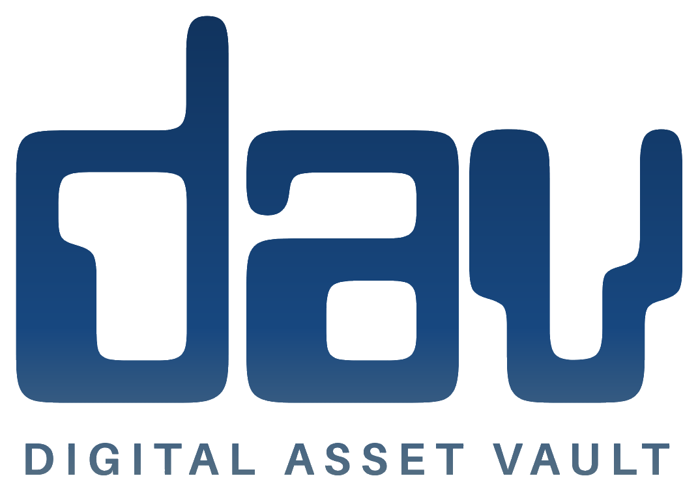

Spreadsheet Command
Premium Excel systems for money, inventory, launches, weddings and small business control.

ShopA dark, futuristic product hub for Excel workbooks, business bundles, creator tools and the marketing systems that drive them. Built to feel like a serious digital operating layer — not another template brochure.
Scroll here and the vault opens: the product families rise forward as the bridge between the brand interface and the Etsy shop.
The site frames Digital Asset Vault GB as a living system: products, launches, traffic, leads and trust all connected around the vault.
Premium Excel systems for money, inventory, launches, weddings and small business control.
Instant digital packs for niche operators who need practical assets fast.
Pinterest, Etsy ads and listing images feeding one evergreen discovery loop.
Supabase-ready foundations for leads, products and campaign intelligence.
Premium downloads now. Smarter product discovery, Pinterest automation and a domain-backed brand platform next.